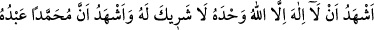
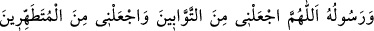
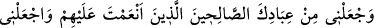
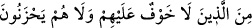

“Allahım! Benim için şükredilen bir gayret, affedilen günah, kabul edilen amel ve
zarar etmeyen ticâret nasib et.”
Abdest bittikten sonra da şöyle duâ eder:
“Tek Allah’tan başka İlah olmadığına, O’nun ortağı bulunmadığına, Muhammed’in
O’nun kulu ve rasûlü olduğuna şâhitlik ederim. Ey Allahım! Beni, tevbe edenlerden,
temizlenenlerden, kendilerine nîmet verdiğin salih kullarından ve kendileri için korku
ve hüzün olmayanlardan eyle.”
Abdestte dört uzvun tahsis edilmesinin hikmeti; Âdem (a.s.)’ın yüzüyle cennetteki
yasak ağaca yönelmiş olması, eliyle onu tutması, ayağı ile ona yürümesi ve
(pişmanlıktan) dolayı elini başının üzerine koyması sebebiyle bu günahlara keffaret
olması için bu dört uzvun yıkanması emredilmiştir. Peygamberimiz (s.a.v.) şöyle
buyurmuştur: “Kul yüzünü yıkadığı zaman günahları göz çanaklarının altından bile
çıkar gider.”[261] Diğer uzuvlarda da bu böyledir.
Denilmiştir ki bu dört uzvun yıkanması diğer ümmetler arasında çok parlak ve
alametli olmaları için sâdece Ümmet-i Muhammed’e has kılınmıştır. Nitekim Rasûlullah
(s.a.v.) bir kabristana geldiğinde şöyle buyurmuştur:
“Selam size ey mü’minler topluluğunun yurdu! Muhakkak biz de Allah dilerse size
katılacağız. Biz kardeşlerimizi görmeyi arzu ederiz.” Yanındakiler:
“Ya Rasûlallah biz senin kardeşlerin değil miyiz?” deyince Rasûlullah (s.a.v.):
“Siz benim ashâbımsınız, kardeşlerim ise daha sonra geleceklerdir.” diye karşılık
vermiştir.
Onlar; “Sonra gelecek ümmetini nasıl tanırsın, yâ Rasûlallah?” diye sorunca şöyle
buyurmuştur:
“Ne dersiniz bir adamın siyah atların arasında alnı beyaz sekili, bir atı olsa, onu
tanımaz mı?” deyince “Tabî ki tanır.” diye tasdik ettiler. Bunun üzerine Rasûlullah
(s.a.v.) şöyle buyurdu: “Onlar kıyâmet günü abdestten dolayı uzuvları beyaz ve parlak
olarak gelirler de ben onları Havz-ı Kevser’e sokarım.”[262]
Şunu bil ki Peygamberimiz (s.a.v.) Mekke fethinde tek abdestle beş vakit namaz kıldı.
Bunun üzerine Ömer (r.a.): “Daha önce yapmadığın şeyi yaptın.” dedi. Efendimiz (a.s.)
“Kasten yaptım ey Ömer.”[263] diye karşılık verdi. Rasûlullah (a.s.) her namaz için
abdesti yenilemenin müstehab olmakla birlikte bunun da câiz olduğunu göstermek için
böyle yapmıştır.